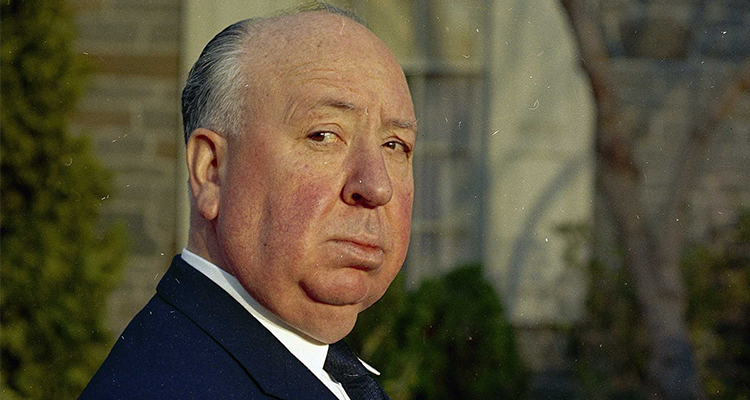
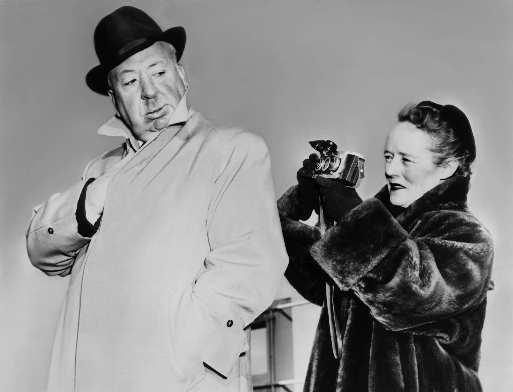
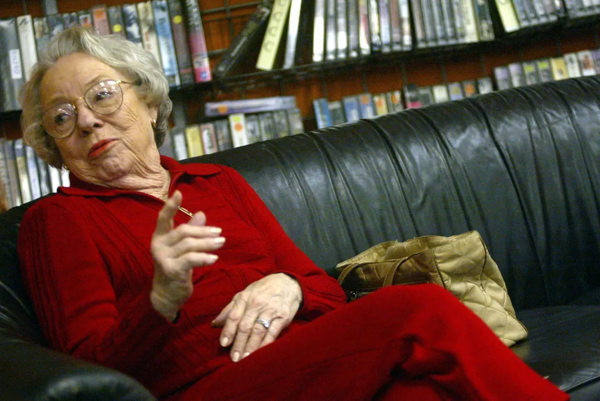

Alfred Hitchcock
(1899 - 1980)
Quem foi Alfred Hitchcock?
Alfred Joseph Hitchcock nascido em Londres, Inglaterra no dia 13 de agosto de 1899. Sua infância foi disciplinada, embora um pouco excêntrica. Solitário, estava sempre isolado, mas atento ao que se passava à sua volta. Alfred e sua familia, frequentemente trocavam de cidade, devido ao comercio que seus pais tinham. Chegou a estudar em convento católico e colégio fundado por jesuítas.
Em 1913 Começou a estudar engenharia na School of Engineering and Navigation, e começou a fazer curso de desenho na universidade da Inglaterra. Foi então que começou a fazer cinema como um novo hobby. No ano seguinte, 1914, seu pai que foi presente na sua vida desde sempre, morreu. Então teve que voltar com sua mãe, a Leytonstone, para se reestabelecer, enquanto a primeira guerra começava. Conseguiu um emprego na empresa Telegraph Henley, de calcular e revisar cabos elétricos e as tensões, porém, não se agradava muito da sua função, meses depois, foi transferido para o departamento de publicidade. Apesar de sua pouca idade, construiu uma reputação, explorando sua criatividade. A empresa em que trabalhava, colaborava com a guerra, então foi poupado do recrutamento militar, também devido a sua obesidade.
Foi daí, no fim dos anos 1910 e no começo dos anos 1920, que Hitchcock começou a se interessar em filmes e cinemas, e, também, a colocar em prática as suas ideias e seus primeiros projetos que mudariam a sua carreira. Teve seu inicio com designer de inter-títulos no estúdio Players-Lasky, em Londres, aprendendo a roteirizar, editar e direcionar arte. Foi só mais tarde, em 1922, que se tornou assistente de direção.
Em 2 de dezembro de 1926 casou-se com Alma Reville, moravam em Cromwell Road, em Londres. Em 1928, souberam que ela estava grávida, de sua única filha, Patricia Alma Hitchcock, nasceu em 7 de julho daquele ano. Casamento esse que durou por 54 anos.
Curiosidade: Patricia Hitchcock (a unica filha de Alfred) foi uma atriz e que fez dois papéis nos filmes dirigidos por seu pai, como: Pavor nos Bastidores (1950) e Psicose (1960)!
- Melhores filmes indicados ao Oscar
Indicado a Melhor diretor em Rebecca (Rebecca, a Mulher Inesquecível) de 1941.

Indicado a Melhor diretor em Lifeboat (Um Barco e Nove Destinos) de 1945.

Indicado a Melhor diretor em Spellbound (Quando Fala o Coração) de 1946.

Indicado a Melhor diretor em Rear Window (Janela Indiscreta) de 1955.

Indicado a Melhor diretor em Psycho (Psicose) de 1961.

Venceu o Prêmio Irving Thalberg de 1968.